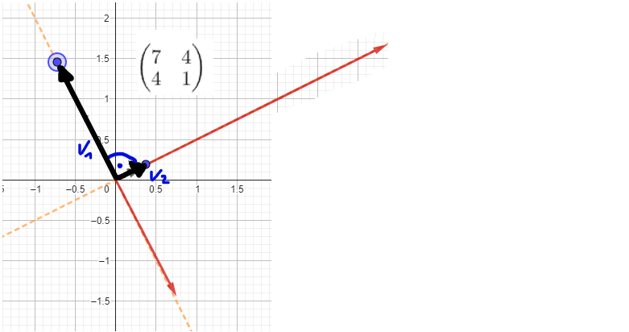
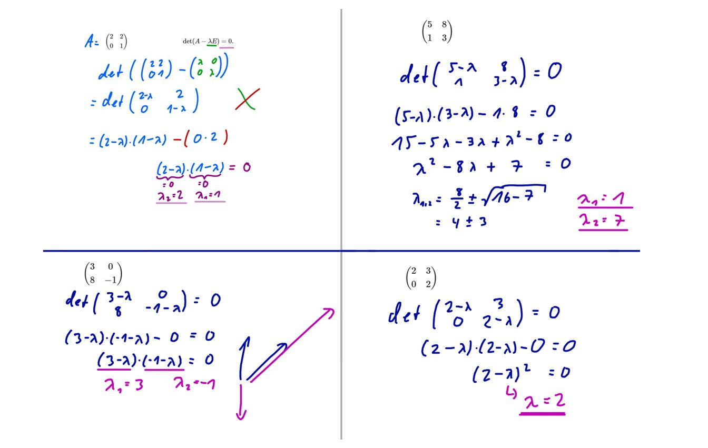
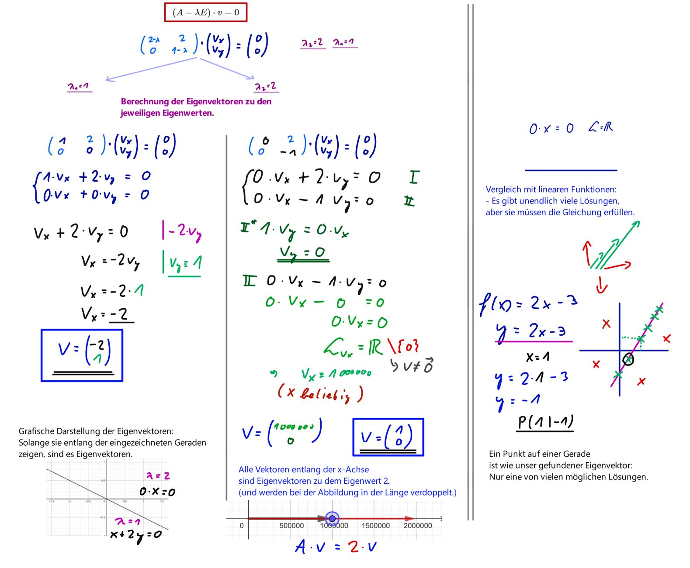
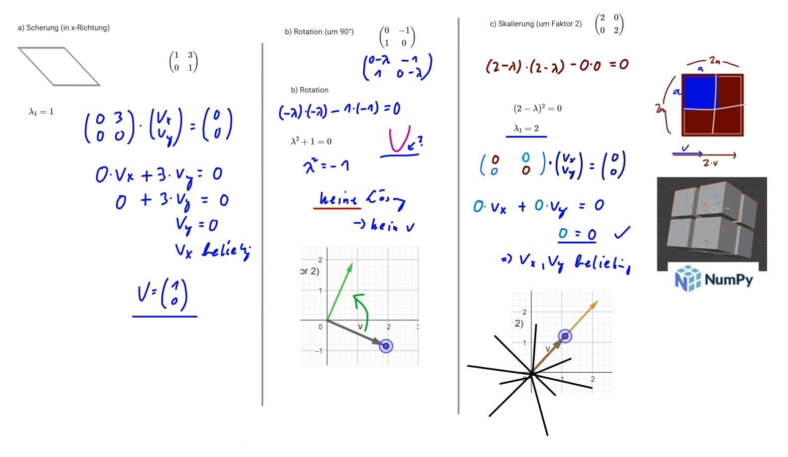

Eigenvektoren und Eigenwerte¶
Die nächste zentrale Definition ist die von Eigenwerten und Eigenvektoren eines Endomorphismus eines Vektorraums.
Eigenwert
Sei \( f: V \to V \) ein Endomorphismus. Ein \( \lambda \in K \) heißt Eigenwert von \( f \), wenn es einen Vektor \( v \neq 0 \) gibt mit \( f(v) = \lambda v \).
Ein solcher Vektor heißt dann ein Eigenvektor von \( f \) zum Eigenwert \( \lambda \).
Eigenvektor
Ein Eigenvektor \( v \) bzgl. \( f \) ist ein Vektor, der nicht Null ist und der durch \( f \) um einen Faktor \( \lambda \), den Eigenwert, gestreckt wird.
Wir definieren:
für alle \( \lambda \in K \).
Dies ist ein Untervektorraum von \( V \).
Per Definition ist \( \lambda \in K \) ein Eigenwert von \( f \), wenn es einen Vektor \( v \neq 0 \) gibt, der zu \( E(f, \lambda) \) gehört.
\( E(f, \lambda) = \{ v \in V \mid f(v) = \lambda v \} \) ist ein Untervektorraum von \( V \).
Bild zu Eigenvektoren

Berechnen von Eigenwerten und Eigenvektoren¶
Nach Definition muss \( f(v) = \lambda v \) sein. Das bedeutet konkret (A ist eine Matrix):
Dies lässt sich auch umschreiben, mit \( E \) der Einheitsmatrix:
Das lässt sich dann umformen zu:
Bestimmung von Eigenwerten
Um nun den Eigenwert zu berechnen, löst man diese Gleichung.
Da \( v \neq 0 \) vorausgesetzt wird, folgt, dass es nur dann lösbar ist, wenn \( (A - \lambda E) \) einen nicht trivialen Kern hat (also keinen Kern \( \neq 0 \)).
Das bedeutet wiederum, dass die Determinante 0 sein muss:
Diese Determinante nennt man das charakteristische Polynom. Die Nullstellen dieses Polynoms sind die Eigenwerte.
Bestimmung von Eigenvektoren
Zur Bestimmung der Eigenvektoren setzt man den Eigenvektor in die Gleichung:
ein, anstelle des \( \lambda \), und erhält so ein Gleichungssystem, das man lösen kann.
Die Lösung dieses Gleichungssystems ist dann der Eigenvektor bzw. die Eigenvektoren.
Beispiel: Bestimmung von Eigenwerten
Wir bestimmen mal die Eigenwerte der folgenden Matrix:
Setzt man diese in die Gleichung \( (A - \lambda E) = 0 \) ein, dann erhaltet ihr:
Dann berechnet ihr die Determinante dazu:
Die Nullstellen des Polynoms sind dann die Eigenwerte.
Also in diesem Fall \( \lambda_{1,2} = 2 \) und \( \lambda_3 = -2 \).
Beispiel: Bestimmung von Eigenvektoren
Jetzt geht es weiter mit den Eigenvektoren. Dazu setzen wir die Eigenwerte für \( \lambda \) ein, zuerst \( \lambda = 2 \):
Dann muss man das folgende Gleichungssystem lösen:
Man erhält durch Umformung: (z.B. Gauß-Jordan-Algorithmus)
Dadurch ergibt sich dieses Gleichungssystem:
Als möglicher Vektor lässt sich so ablesen:
Die Eigenvektoren sind dann alle Vielfachen dieses Vektors!
Für den Eigenwert \( -2 \) macht ihr das genauso:
So erhaltet ihr den zweiten Eigenvektor, nämlich alle Vielfachen des Vektors:
Aufgaben zu Eigenwerten und Eigenvektoren¶
1) Eigenvektoren berechnen (2x2 Matrizen)
Berechne die Eigenvektoren der folgenden Matrizen:
a)
b)
c)
d)
Lösung
a) \((2-\lambda)(1-\lambda)=0\)
\(\lambda_{1}=1\) und \(\lambda_{2}=2\)
\(v_{1}= \begin{pmatrix} -2 \\ 1 \end{pmatrix}\) und \(v_{2}= \begin{pmatrix} 1 \\ 0 \end{pmatrix}\)
b) \(\lambda^2 - 8\cdot \lambda +7=0\)
\(\lambda_{1}=1\) und \(\lambda_{2}=7\)
\(v_{1}= \begin{pmatrix} -2 \\ 1 \end{pmatrix}\) und \(v_{2}= \begin{pmatrix} 4 \\ 1 \end{pmatrix}\)
c) \((3-\lambda)\cdot (-1-\lambda)=0\)
\(\lambda_{1}=3\) und \(\lambda_{2}=-1\)
\(v_{1}= \begin{pmatrix} \frac{1}{2} \\ 1 \end{pmatrix}\) und \(v_{2}= \begin{pmatrix} 0 \\ 1 \end{pmatrix}\)
d) \((2-\lambda)^2=0\)
\(\lambda_{1}=2\)
\(v_{1}= \begin{pmatrix} 1 \\ 0 \end{pmatrix}\)
2) Eigenvektoren - Sonderfälle (2x2 Matrizen)
Berechne die Eigenvektoren der folgenden Matrizen:
a) Scherung (in x-Richtung)
b) Rotation (um 90°)
c) Skalierung (um Faktor 2)
Lösung
a) Scherung
\((1-\lambda)^2=0\)
\(\lambda_{1}=1\)
\(v_{1}= \begin{pmatrix} 1 \\ 0 \end{pmatrix}\)
Die Eigenvektoren liegen alle in x-Richtung, da die Matrix in x-Richtung schert.
b) Rotation
\(\lambda^2 + 1 = 0\)
Keine reellen Lösungen für \(\lambda\), also gibt es keinen Eigenvektor.
(Die Richtung kann ja auch nicht gleich bleiben, da sie immmer um 90° geändert wird.)
c) Skalierung
\((2-\lambda)^2=0\)
\(\lambda_{1}=2\)
Die Gleichung enthält alle 2-dimensionalen Vektoren als Lösung, d.h. es gibt unendlich viele Eigenvektoren und ihre Richtung ist beliebig.
(Da die Richtung immer beibehalten wird, und lediglich die Länge des Vektors wird verdoppelt.)
3) Eigenvektoren berechnen (3x3 Matrizen)
Berechne die Eigenvektoren der folgenden Matrizen:
a)
b)
c)
Lösung
a) \(\lambda \cdot (\lambda -2) \cdot (3-\lambda)=0\)
\(\lambda_{1}=0\) und \(\lambda_{2}=2\) und \(\lambda_{3}=3\)
\(v_{1}= \begin{pmatrix} 1 \\ 0 \\ 1 \end{pmatrix}\) und \(v_{2}= \begin{pmatrix} -1 \\ 0 \\ 1 \end{pmatrix}\) und \(v_{3}= \begin{pmatrix} 2 \\ 3 \\ 2 \end{pmatrix}\)
b) \((\lambda -3) \cdot (-\lambda^2+9)=0\)
\(\lambda_{1}=-3\) und \(\lambda_{2}=3\) und \(\lambda_{3}=3\)
\(v_{1}= \begin{pmatrix} \frac{1}{2} \\ -\frac{1}{2} \\ 1 \end{pmatrix}\) und \(v_{2}= \begin{pmatrix} 1 \\ 1 \\ 0 \end{pmatrix}\) und \(v_{3}= \begin{pmatrix} -2 \\ 0 \\ 1 \end{pmatrix}\)
c) \((5- \lambda) \cdot (\lambda^2 -12 \cdot \lambda + 11)=0\)
\(\lambda_{1}=5\) und \(\lambda_{2}=1\) und \(\lambda_{3}=11\)
\(v_{1}= \begin{pmatrix} 1 \\ 1 \\ 2 \end{pmatrix}\) und \(v_{2}= \begin{pmatrix} -2 \\ 0 \\ 1 \end{pmatrix}\) und \(v_{3}= \begin{pmatrix} -1 \\ 5 \\ -2 \end{pmatrix}\)
Eigenwerte mit Python finden
Finde heraus, wie man mit numpy Eigenwerte und Vektoren bestimmen kann.
Lösung
Nutze z.B. numpy.linalg.eig
für die Bestimmung der Eigenwerte und Vektoren.
Begriffe und charakteristisches Polynom¶
Kurze Übersicht/Wiederholung wichtiger Begriffe für die Herleitung
Determinante: Gibt an, wie sich das Volumen bei der durch die Matrix beschriebenen linearen Abbildung ändert.
Eigenvektor: Der Eigenvektor einer Abbildung ist ein vom Nullvektor verschiedener Vektor, dessen Richtung durch die Abbildung nicht verändert wird.
Sonderfall: Für reelle symmetrische Matrizen gilt: Die Eigenvektoren zu verschiedenen Eigenwerten sind zueinander orthogonal.
Eigenwert: Der Eigenwert ist der Skalierungsfaktor eines Eigenvektors.
injektiv: Eine Funktion ist injektiv, wenn es zu jedem Element y der Zielmenge Y höchstens ein Element x der Ausgangs- oder Definitionsmenge X gibt, das darauf abgebildet wird.
invertierbar: Eine Funktion ist genau dann invertierbar , wenn sie bijektiv (also gleichzeitig injektiv und surjektiv) ist. Eine quadratische Matrix ist genau dann invertierbar, wenn ihre Determinante ungleich null ist.
Herleitung: Eigenwerte \(\lambda\) erfüllen \( \det(\lambda E - A) = 0 \)
Das charakteristische Polynom ( \( \det(\lambda E - A) \) ) spielt eine wichtige Rolle bei der Bestimmung der Eigenwerte einer Matrix, denn die Eigenwerte sind genau die Nullstellen des charakteristischen Polynoms. Auch wenn man zum expliziten Berechnen des charakteristischen Polynoms immer eine Basis und damit eine Darstellungsmatrix auswählt, hängen das Polynom wie auch die Determinante nicht von dieser Wahl ab.
Um zu zeigen, dass die Eigenwerte gerade die Nullstellen des charakteristischen Polynoms sind, geht man folgendermaßen vor:
Es sei \(\lambda \in \mathbb{K}\) und \(A\) eine \(n \times n\)-Matrix über \(\mathbb{K}\). Dann gelten die folgenden Äquivalenzen:
Orthogonale Eigenvektoren¶
Herleitung: Eigenvektoren von symmetrischen Matrizen sind orthogonal
Für zwei verschiedene Eigenvektoren \(v\) und \(w\) mit den Eigenwerten \(\lambda\) und \(\mu\) gilt:
Wenn \(A\) symmetrisch (d.h. \(A = A^t\)) ist, folgt:
Da \(\lambda \neq \mu\), muss \(v^t w = 0\) sein. Das ist dann \(v \perp w\).
4) Eigenvektoren von symmetrischen Matrizen berechnen
(i) Berechne die Eigenvektoren der folgenden Matrizen.
(ii) Verifiziere rechnerisch, dass die Eigenvektoren orthogonal zueinander stehen.
a)
b)
Lösung
a) \(\lambda_{1}=-1\) und \(\lambda_{2}=9\)
\(v_{1}= \begin{pmatrix} -\frac{1}{2} \\ 1 \end{pmatrix}\) und \(v_{2}= \begin{pmatrix} 2 \\ 1 \end{pmatrix}\)
b) \(\lambda_{1}=0\) und \(\lambda_{2}=2\) und \(\lambda_{3}=3\)
\(v_{1}= \begin{pmatrix} 1 \\ -2 \\ 1 \end{pmatrix}\) und \(v_{2}= \begin{pmatrix} -1 \\ 0 \\ 1 \end{pmatrix}\) und \(v_{3}= \begin{pmatrix} 1 \\ 1 \\ 1 \end{pmatrix}\)

5) Eigenvektoren von allgemeinen Matrizen auf Orthogonalität untersuchen.
Untersuche die Eigenvektoren aus Aufgabe 3 auf Orthogonalität. (Wähle dazu deine eigenen Vektoren oder die aus der Lösung.)
Mitschriften¶
Eigenwerte berechnen (Aufgabe 1)

Eigenvektoren berechnen (Aufgabe 1a)

Eigenvektoren - Sonderfälle (Aufabe 2)
